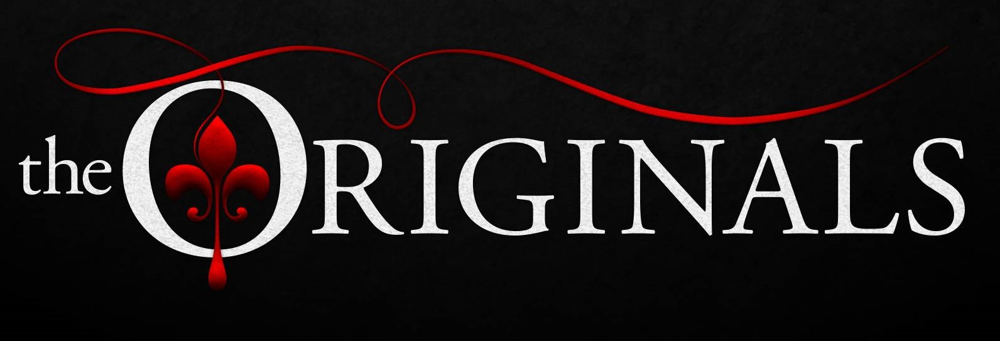
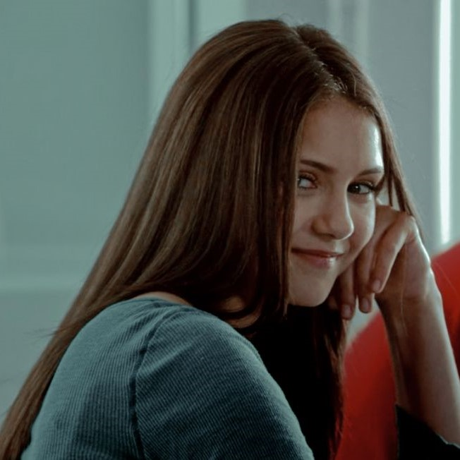
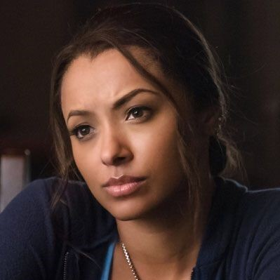
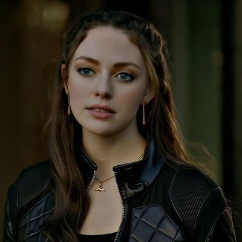
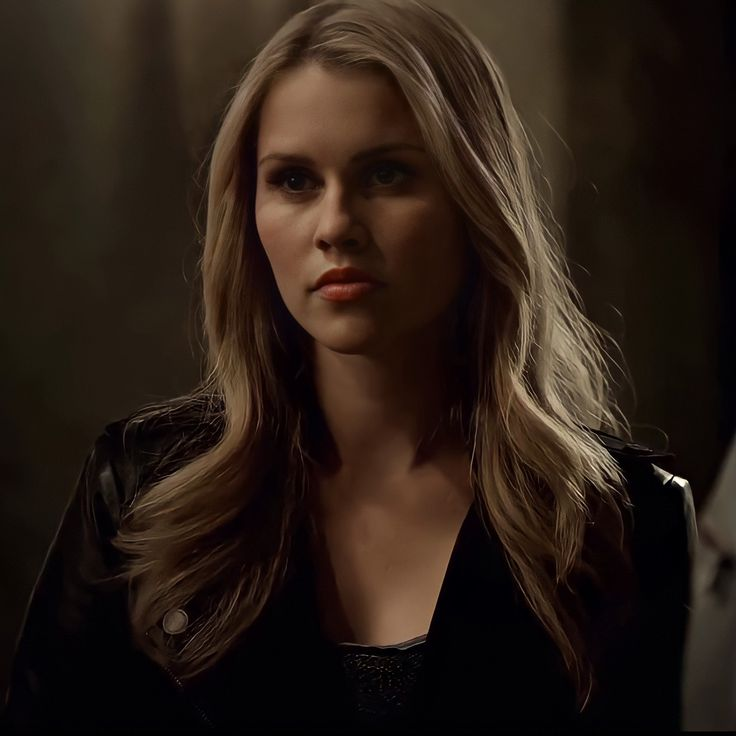
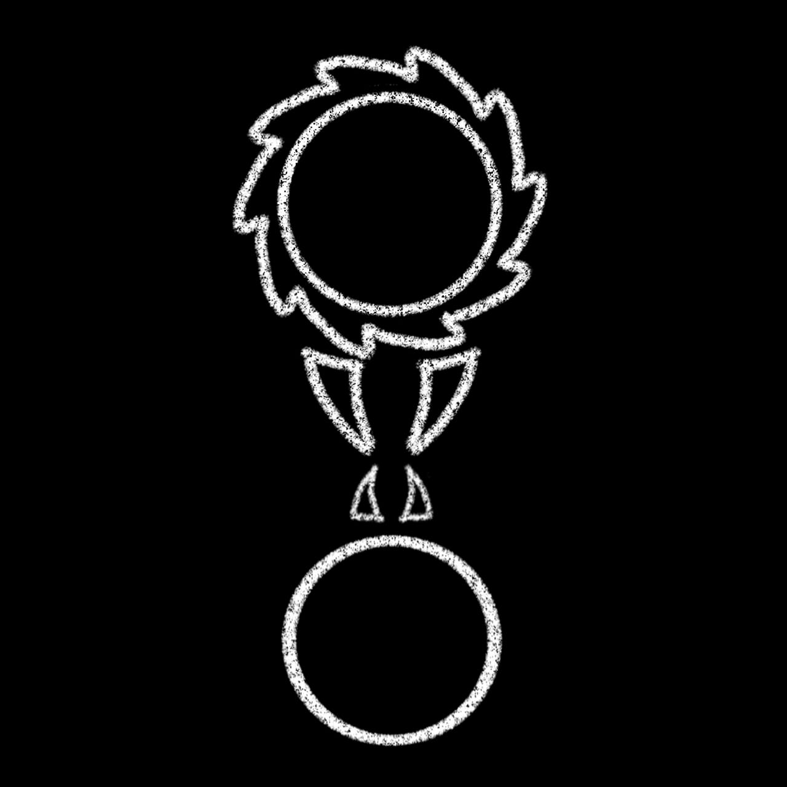
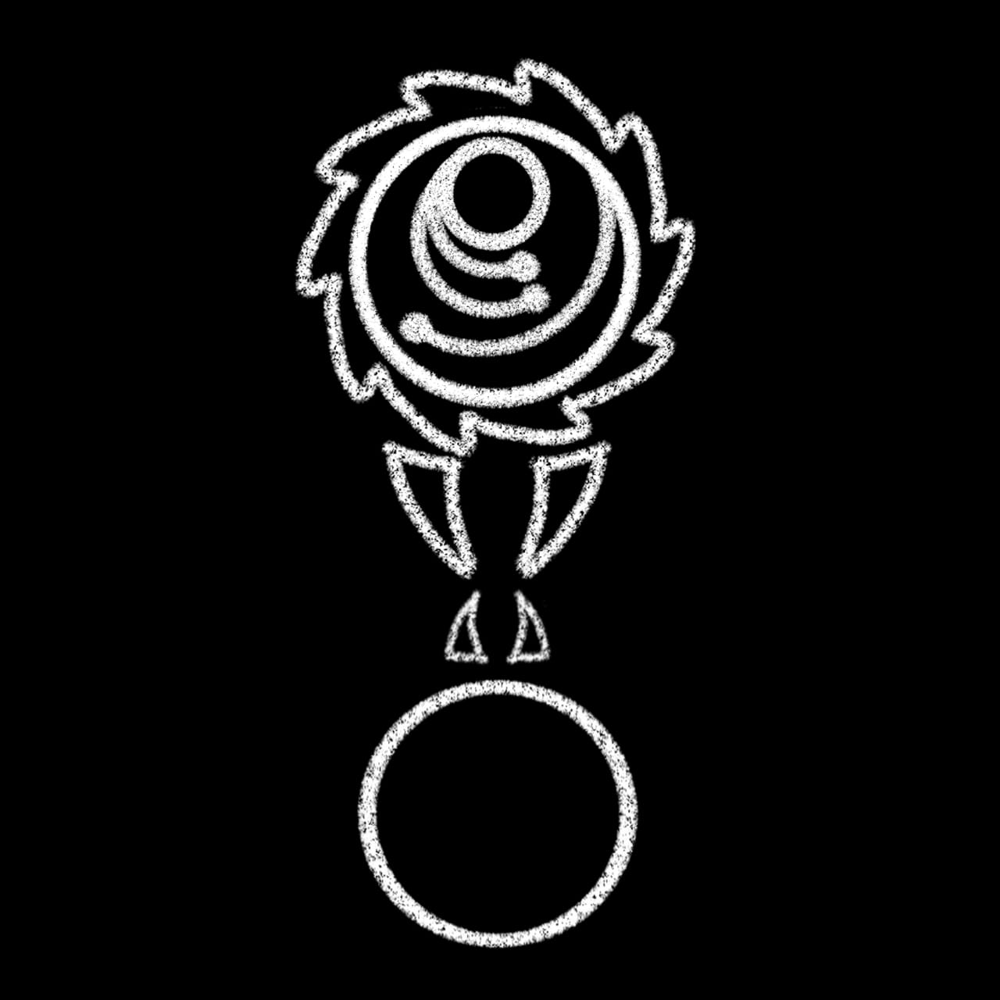

Alguns meses depois que seus pais são mortos em um trágico acidente de carro, Elena Gilbert e seu irmão Jeremy tentam aplacar sua dor. Para Elena, que sempre foi popular e envolvida com a escola e amigos, é uma luta esconder sua tristeza do mundo. Ela se vê atraída por um novo estudante bonitão e misterioso, Stefan, sem saber que o jovem é um vampiro centenário fazendo o melhor para viver em paz entre os humanos. Seu irmão Damon, porém, é o típico estereótipo de vampiro, incluindo a violência e a brutalidade. Os irmãos travam uma guerra pelas almas de Elena e de todos na pequena cidade do estado da Virginia. Baseado na série de livros de by L.J. Smith.

The Originals
O vampiro Klaus retorna a Nova Orleans, que sua família ajudou a construir, para investigar rumores de uma conspiração contra ele, nesta série baseada em "The Vampire Diaries". Ele encontra seu antigo protegido, Marcel, que reina poderosamente sobre os seus habitantes, causando uma tensão crescente na comunidade sobrenatural. Klaus e seu irmão, Elijah, descobrem que o lobisomem Hayley caiu nas mãos de uma bruxa. Klaus e Elijah pretendem recuperar a cidade e, enquanto esperam para ver se o seu irmão, Rebekah, vai deixar Mystic Falls para se juntar a eles, decidem formar uma aliança com as bruxas para ajudar a promover sua causa.
Legacies
Hope Mikaelson, descendente da linhagem mais poderosa de vampiros, lobisomens e bruxas, frequenta a Escola Salvatore para Jovens e Superdotados, um refúgio onde ela pode aprender a controlar suas habilidades e impulsos sobrenaturais
Personagens Importantes

Elena Gilbert
Elena Gilbert é uma menina doce que perdeu seus pais em um acidente e agora mora com sua tia Jenna e com seu irmão adotivo, Jeremy Gilbert.
Stefan Salvatore
Stefan é um vampiro que é visto pela primeira vez se matriculando em Mystic Falls High School. Ele nasceu em Mystic Falls e agora voltou para a cidade, onde vive com seu tio Zach na Pensão Salvatore.
Damon Salvatore
Damon Salvatore é um dos dois principais protagonistas masculinos da The Vampire Diaries. Ele foi um grande antagonista na primeira parte da primeira temporada . Ele nasceu durante os anos 1800 e morou na cidade colonial de Mystic Falls com seu irmão mais novo, Stefan Salvatore

Bonnie Bennet
Bonnie Sheila Bennett St. John (Nascida: Bennett) é uma Bruxa muito poderosa e também uma das principais personagens femininas de The Vampire Diaries.
Caroline Forbes
Caroline Elizabeth Forbes sempre teve um forte vínculo com seus amigos de infância, Elena Gilbert, Bonnie Bennett, Matt Donovan. Ela se tornou melhor amiga com Stefan Salvatore depois tornar uma vampira e ele se tornou seu mentor.
Klaus Mikaelson
Niklaus Mikaelson é o deuteragonista de The Originals . Anteriormente, era um importante personagem recorrente no The Vampire Diaries , que servia inicialmente como antagonista na segunda temporada e acabou se tornando um personagem de apoio e protagonista na terceira temporada e nas quatro temporadas

Hope Mikaelson
Hope Andrea Mikaelson é considerada o ser mais podereso, sendo de uma espécies nova chamada tríbrida, que é uma mistura de bruxa, lobisomem e vampiro. Além disso, ela é filha do Híbrido Original Niklaus Mikaelson e da lobisomen alpha Hayley Marshall-Kenner,

Rebekah Mikaelson
Rebekah Mikaelson Ela é a única Vampira original feminina e a segunda filha de Mikael e Esther . Ela é a irmã mais nova de Freya Mikaelson , Finn Mikaelson , Elijah Mikaelsone Kol Mikaelson , a meia-irmã mais nova de Niklaus Mikaelson , a irmã mais velha de Henrik Mikaelson e a tia de um sobrinho não nascido e sem nome - o filho de Freya - e Niklaus filha com Hayley Marshall , Hope Mikaelson .
Espécies principais
Vampiro
Bruxas
Lobisomens

Híbridos
Herege

Tríbridos
Cidades
Mystic Falls
Mystic Falls é uma pequena cidade na Virgínia. Embora primeiramente habitada pela família Bennett na década de 1690 em diante, foi fundada oficialmente em 1860 pelas famílias fundadoras. A cidade estava envolvida na Guerra Civil Americana. A cidade foi nomeada após a Ponte Wickery cair.
Nova Orleans
Em The Originals , Klaus viajou de Mystic Falls para o French Quarter em Nova Orleans para investigar uma dica de Katherine Pierce de que alguém estava tramando uma rebelião contra ele. Seu irmão Elijah logo seguiu Klaus para o French Quarter, onde eles decidiram ficar. Marcel Gerard e outros moradores do bairro costumam se referir coloquialmente a ele como "o Bairro".